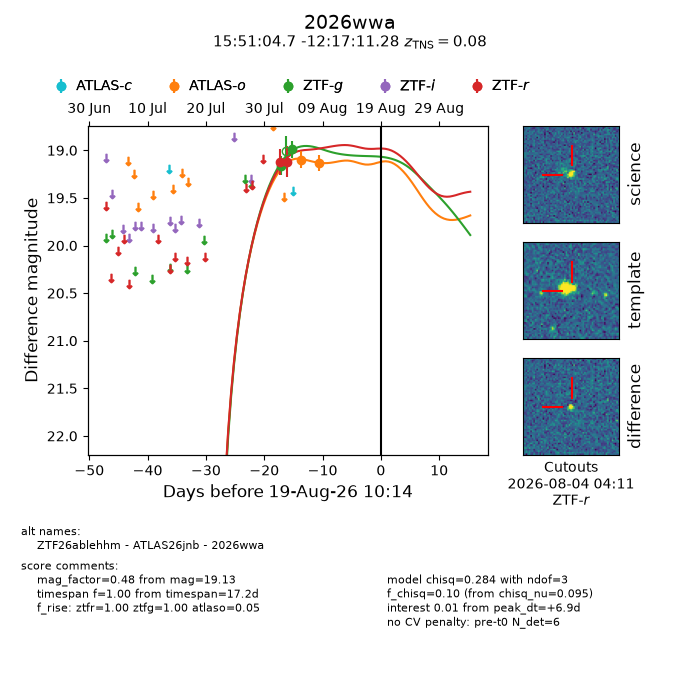
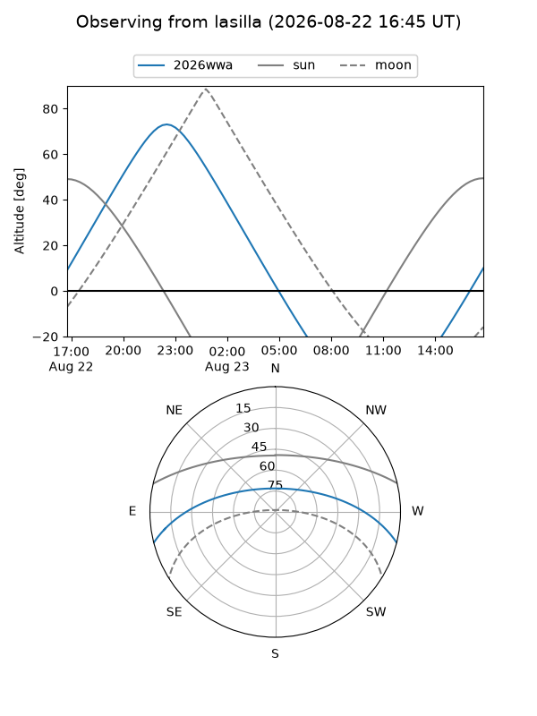
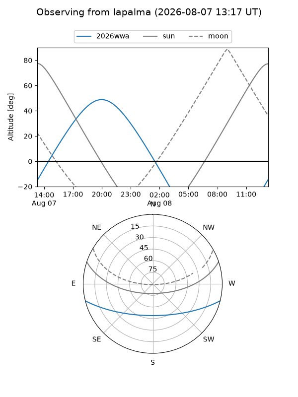
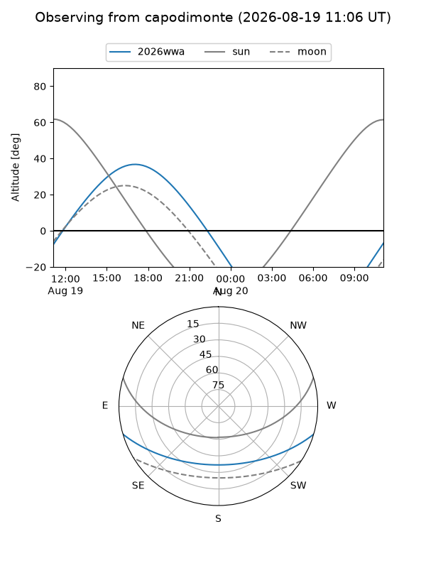
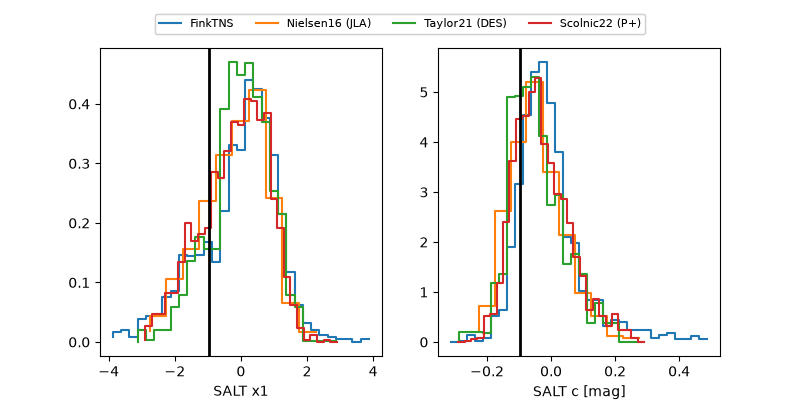

2026wwa
Target 2026wwa at 2026-08-19 10:17
Aliases and brokers:
FINK-ZTF: ztf.fink-portal.org/ZTF26ablehhm
Lasair-ZTF: lasair-ztf.lsst.ac.uk/objects/ZTF26ablehhm
ALeRCE-ZTF: alerce.online/object/ZTF26ablehhm
YSE-PZ: ziggy.ucolick.org/yse/transient_detail/2026wwa
TNS name: wis-tns.org/object/2026wwa
Direct TNS query: direct search
alt names
ZTF26ablehhm (ztf,fink_ztf)
2026wwa (tns,yse)
ATLAS26jnb (atlas)
Coordinates:
equatorial (ra, dec) = 237.7696,-12.28647
equatorial (HMS+DMS) = 15:51:04.69,-12:17:11.28
galactic (l, b) = (356.7292,+31.25406)
Flags:
TNS type: SN Ia
TNS redshift: 0.0800
peak dt: +6.9
Photometry:
last atlaso=19.13, ztfg=18.99, ztfr=19.12
2 atlaso, 2 ztfg, 2 ztfr detections
Lightcurve

Visibility



Additional plots
